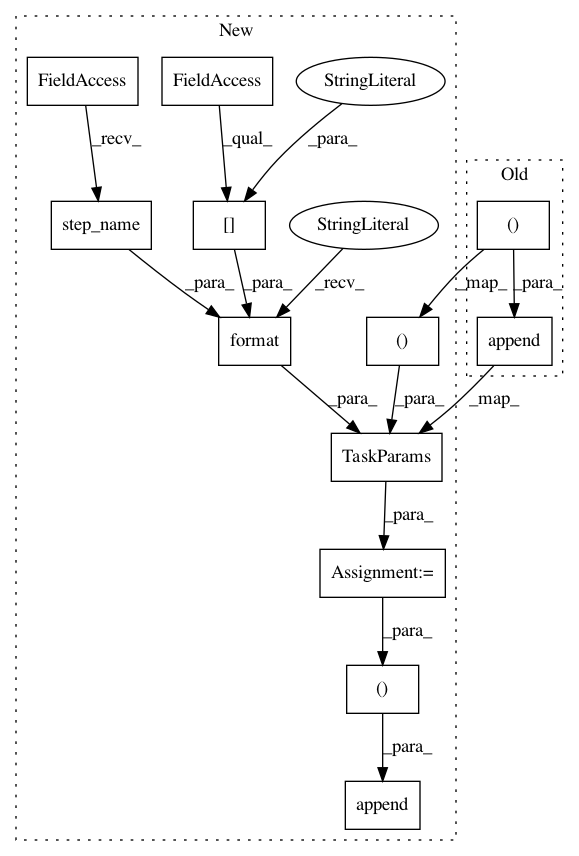

03f6c323579d0d9c92ea1b8559e55be67af9b6c1,pysos/sos_step.py,MP_Step_Executor,submit_task,#MP_Step_Executor#Any#,1153
Before Change
self.pool = mp.Pool(min(env.max_jobs, len(self._groups)))
if self.pool:
self.proc_results.append(self.pool.apply_async(
execute_task, // function
(self.step.task, // task
self.step.global_def, // global process
// if pool, it must not be in prepare mode and have
// __signature_vars__
env.sos_dict.clone_selected_vars(env.sos_dict["__signature_vars__"] \
| {"_input", "_output", "_depends", "input", "output", "depends", "_index", "_runtime"}),
signature,
self.step.sigil
)))
else:
// execute in existing process
self.proc_results.append(
execute_task( // function
After Change
self.pool = mp.Pool(min(env.max_jobs, len(self._groups)))
if self.pool:
param = TaskParams(
name = "{} (index={})".format(self.step.step_name(), env.sos_dict["_index"]),
data = (
self.step.task, // task
self.step.global_def, // global process
// if pool, it must not be in prepare mode and have
// __signature_vars__
env.sos_dict.clone_selected_vars(env.sos_dict["__signature_vars__"] \
| {"_input", "_output", "_depends", "input", "output", "depends", "_index", "_runtime"}),
signature,
self.step.sigil
))
self.proc_results.append(
self.pool.apply_async(
execute_task, // function
(param, )
)
)
else:
param = TaskParams(
name = "{} (index={})".format(self.step.step_name(), env.sos_dict["_index"]),
data = (
In pattern: SUPERPATTERN
Frequency: 3
Non-data size: 12
Instances
Project Name: vatlab/SoS
Commit Name: 03f6c323579d0d9c92ea1b8559e55be67af9b6c1
Time: 2016-10-19
Author: ben.bog@gmail.com
File Name: pysos/sos_step.py
Class Name: MP_Step_Executor
Method Name: submit_task
Project Name: vatlab/SoS
Commit Name: 03f6c323579d0d9c92ea1b8559e55be67af9b6c1
Time: 2016-10-19
Author: ben.bog@gmail.com
File Name: pysos/sos_step.py
Class Name: Celery_Step_Executor
Method Name: submit_task
Project Name: vatlab/SoS
Commit Name: 03f6c323579d0d9c92ea1b8559e55be67af9b6c1
Time: 2016-10-19
Author: ben.bog@gmail.com
File Name: pysos/sos_step.py
Class Name: RQ_Step_Executor
Method Name: submit_task